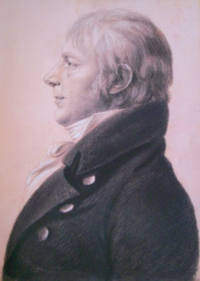

Kiliaen K. Van Rensselaer
Attorney and Congressman, Albany resident Kiliaen K. Van Rensselaer (Killian K. Van Rensselaer) was born in June 1763. He was the ninth and last child of Kiliaen and Ariaantie Schuyler Van Rensselaer. His mother died four months after Kiliaen's birth. His father remarried in 1769. Kiliaen K. grew up in an otherwise large family on his father's Greenbush estate. His father died in December 1781 when this youngest son was little past eighteen.
For a time, he was said to have been the secretary of General Philip Schuyler.
But this youngest son of a landed family was being groomed for a career in the law. He attended Yale College. A college letter to his brother and later correspondences can be read online. Returning home, he was admitted to the New York Bar in 1784. He opened a law office at Claverack - where young clerks learned the basics of legal practice. He appeared in various courts in Columbia County, was county surrogate in 1786, and was commissioned "brigade Inspector" in the Columbia County militia.
In January 1791, he married Margaret Sanders in Schenectady. By 1801, the marriage had produced five children who were christened at the Albany Dutch church where he was a church officer. This union further cemented the ties between elite families as his older brother already had married Margaret's cousin.
Following the marriage, the Van Rensselaers established their base residence at 116 State Street - a property that came to them from the Sanders family. He later erected a large home on that site. In 1800, his first ward household included ten family members and was served by two slaves. He maintained that home for many years - although his congressional career took him to Washington.
In 1797, he was one of the proprietors of the Hamilton Glass Company.
A Federalist, he was elected to Congress in 1801 and served in the House of Representatives until 1811.
Following his congressional career, he returned to Albany where he served on the city Council and continued to practice law at his 116 State Street address. He served as a trustee of the Albany Academy.
Kiliaen K. Van Rensselaer lost his wife in April 1830. He lived for fifteen more years and died in June 1845 at the age of eighty-two. Letters of Administration were granted on his estate in September. His son, John Sanders Van Rensselaer, succeeded to his legal practice.
Portrait: Photograph of a likeness of a black-and-white, textured chalk portrait by Charles B. J. Fevret de Saint-Memin done about 1805 when the subject was in Washington, DC, and described more fully on page 56 of 200 Years of Collecting. In the Collection of the Albany Institute of History and Art. Perhaps another portrait of him exists in a family collection at Cornell University
.first posted: 2/25/08; updated 5/2/09